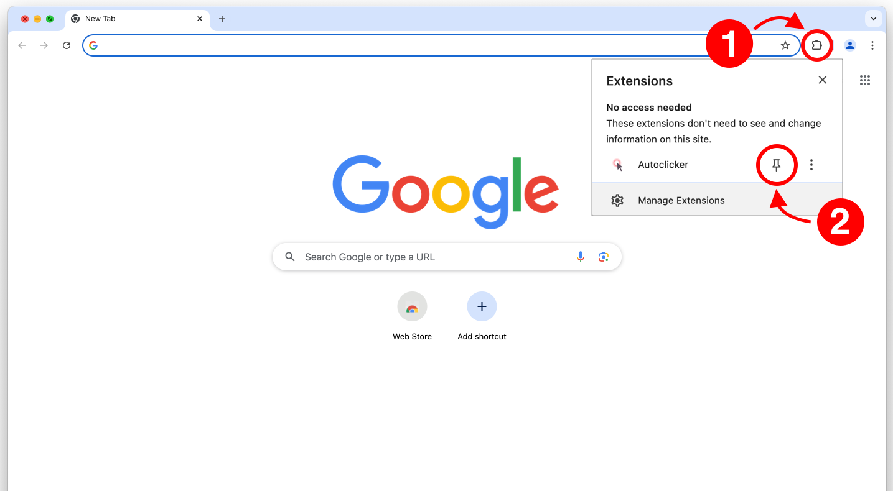

1 Getting Started
Pin to Your Toolbar
Click the puzzle piece icon in Chrome's toolbar to see your extensions. Then click the pin icon next to Speed Auto Clicker.
Once pinned, the extension icon stays visible in your toolbar for quick access.
